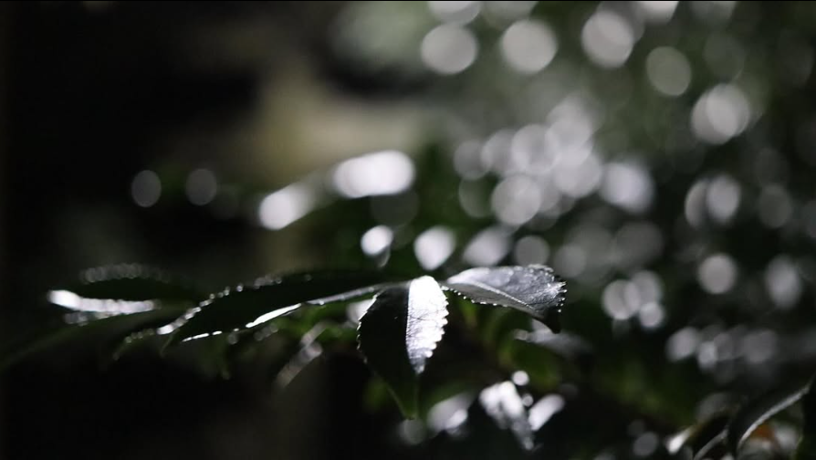
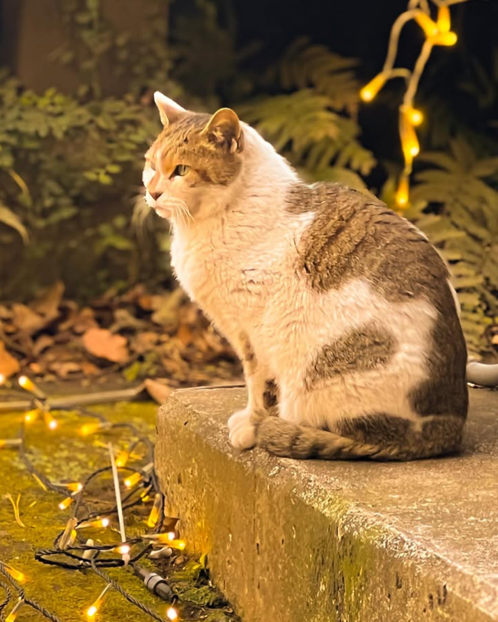

ポートフォリオ




坂本トン（Sakamoto Ton）は東京を拠点に活動するフリーランス写真家です。
日常の中に潜む静かな美しさを切り取ることを得意とし、ポートレートやストリート、風景写真を中心に活動しています。
📧 Email: sakamototon@outlook.jp
📷 Instagram: @sakamoto_photo122
🌐 Web: https://sakamototon.github.io/SakamotoTonPhoto/